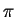
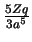
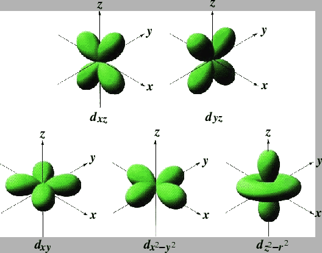

Mn ions sit in the center of the octahedral cage formed by six
O2- ions. Let us first assume that the octahedral cage has normal
shape, meaning six equi-distant Mn-O bond lengths. As a consequence,
the spherical symmetry of the Mn ions is broken; the degeneracy of the
five l = 2 3d orbitals is also broken. This is known as the crystal
field effect, though most times only the influence of neighboring
O2- ions is considered. Considering the cubic symmetry of the
surrounding O2- ions, the split of the five d-shell orbitals
results in two groups, the 
bonding orbitals dxy, dyz,
dzx with symmetry class t2g, and the  bonding orbitals
d3z2-r2,
dx2-y2 with symmetry class eg. The five 3d orbitals are visualized in
Fig. 3.3. eg orbitals have higher energy than
t2g orbitals. This can be understood qualitatively as electrons in
eg orbitals feel more repulsion from the O2- ions than in
t2g orbitals (eg orbitals project toward neighboring O2-
ions, while t2g orbitals points into the empty space in between
O2- ions). The actual energy split can be calculated to be
bonding orbitals
d3z2-r2,
dx2-y2 with symmetry class eg. The five 3d orbitals are visualized in
Fig. 3.3. eg orbitals have higher energy than
t2g orbitals. This can be understood qualitatively as electrons in
eg orbitals feel more repulsion from the O2- ions than in
t2g orbitals (eg orbitals project toward neighboring O2-
ions, while t2g orbitals points into the empty space in between
O2- ions). The actual energy split can be calculated to be
 =
= 
 r4
r4 , where Zq is the
charge of the oxygen ion, a is the Mn-O distance, r is the
distance of the electron to the centering Mn
ion [99]. In practice, the gap typically
varies between 1 and 2 eV.
, where Zq is the
charge of the oxygen ion, a is the Mn-O distance, r is the
distance of the electron to the centering Mn
ion [99]. In practice, the gap typically
varies between 1 and 2 eV.
Figure:
Contour visualization of the five 3d atomic electron
orbitals. Shown are the electron equi-density surfaces.
|
 |
Xiangyun Qiu
2005-02-18